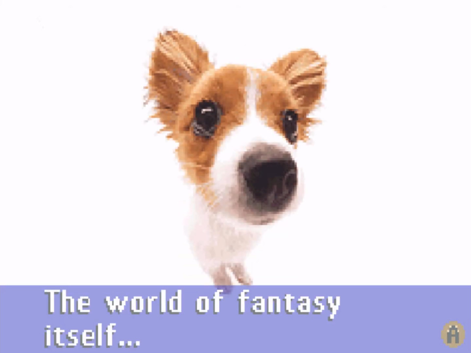
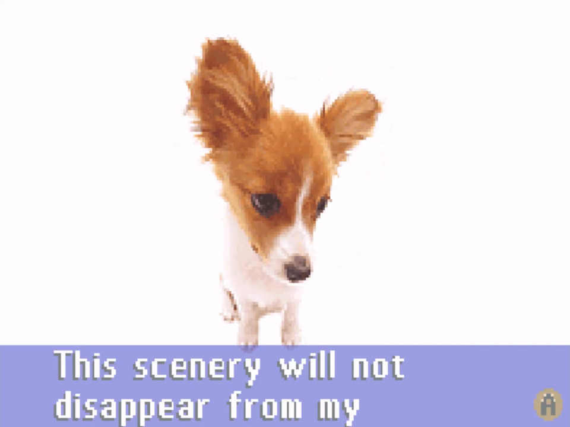
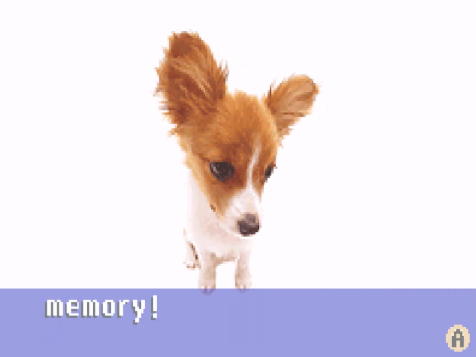

a place to journal with low stakes, and designed to be for "spur of the moment" articles or thoughts that i don't want to designate into entire site pages. also doubles as a scrapbook for everyday photos, as photography is one of my favorite things ever.
click a link on the right to navigate to whatever entry you'd like.
4/20/24 UPDATE:
you can now leave comments on journal entries! check it out!
|  |  |  |